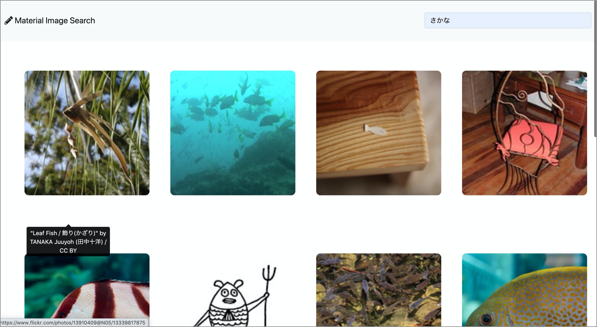

まるまる
プログラミング初心者のまるまるです！
高卒ニートでも、プログラミングを学んで誰かの役に立つ人材を目指したいと思っています。
好きなものは水色系のもの、苦手なものは数学です！
たまーにイラストも描きます。
Studies
TechAcademy フロントエンドコース（４週間）
HTML/CSS

JavaScript

jQuery

Vue.js

Udemy
資格勉強中
ウェブデザイン技能検定3級
ITパスポート
Created site
http://marumaru1.sakura.ne.jp/
↓How to use
左上にある検索フォームから必要な画像を検索して、Flickrから取得した画像を表示します。
表示された画像をタップ、またはクリックするとFlickrのページに行き、元の画像が表示されます。
半年以内にフロントエンド開発、もしくはWebデザインに携われる仕事をしたいと思っています！